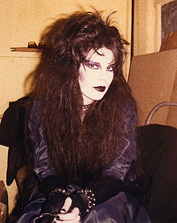
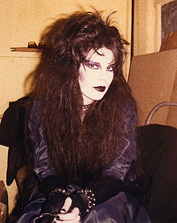
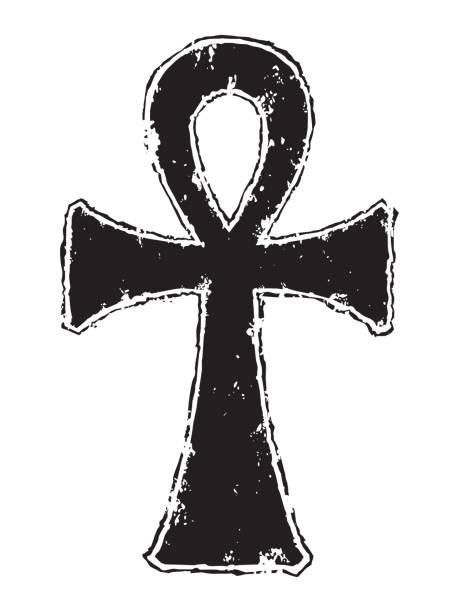
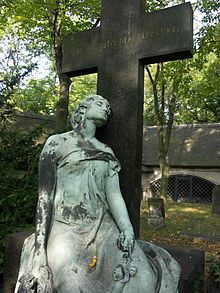

Subcultura Gótica
A subcultura gótica teve início no Reino Unido no início
da década de 1980. O nome gótico na música foi derivado
de uma variedade de influências musicais do período
entre o final dos anos 1960 e 1979, como krautrock, glam
rock entre outros. Bandas pós-punk britânicas notáveis
que pressagiaram o rock gótico e ajudaram a moldar a
subcultura incluem Siouxsie and the Banshees,
Bauhaus,The Cure e Joy Division.

A subcultura gótica sobreviveu por muito mais tempo do
que outras da mesma época e continuou a se diversificar
e se espalhar pelo mundo. Suas tendências imagéticas e
culturais indicam influências da literatura gótica,
expressionismo alemão, era vitoriana, filmes de terror,
fantasia sombria, vaudeville, punk, glam rock e new
romantic. A cena é centrada em publicações, moda,
festivais de música, boates e reuniões organizadas,
especialmente na Europa Ocidental. A subcultura gótica
tem gostos associados a música, estética, literatura e
moda, estando associada a temas que envolvem decadência,
niilismo, existencialismo, melancolia, romantismo
sombrio, obscuridade e outros temas recorrentes na
literatura gótica, carregando uma grande mistura de
expressões alternativas, literárias, artísticas e
musicais. Gêneros musicais relacionados a subcultura
incluem dark wave, coldwave, ethereal wave, deathrock,
gothic rock entre outros gêneros musicais que surgiram
ou tiveram seu auge na década de 1980. A estética
(visual, moda e vestuário), onde pode ser encontrado
vários estilos e visuais como: gótico tradicional (trad
goth), batcave, romântico, vampiro, vitoriano, fetiche,
perky, lolita, e etc. Em sua maioria como uma forma de
expressão artística contra padrões sociais.
Na subcultura gótica também pode ser encontrado
literatura (poesia), o cinema, entre outras formas de
manifestações artísticas e culturais mesmo que não sejam
diretamente a base da subcultura que se deu origem na
música. A subcultura gótica foi influenciada por várias
correntes artísticas e conceitos filosóficos como a
literatura gótica, o mal do século, o expressionismo, o
existencialismo, a cultura de cabaré, a geração beat, a
decadência urbana e o descontentamento social em tempos
de crise.
A mídia de massa ao entrevistar integrantes de diversas
bandas relacionadas ao pós-punk com temáticas e
atmosferas obscuras em suas músicas, por vezes recebia
respostas semelhantes a:
"de temática sombria e soturna, gótica". Na metade da
década de 1980 e início da década de 1990 a subcultura
gótica já havia se disseminado por vários outros países,
principalmente na Europa. O termo "gótico" até hoje é
usado para denominar a subcultura.
História
História
Origens do termo gótico
Ao longo da história, o termo gótico foi usado como adjetivo ou classificação de diversas manifestações artísticas, estéticas e comportamentais. Dessa maneira, podemos ter uma noção da diversidade de significados que esta palavra traz em si. Originalmente, gótico deriva-se de Godos, povo germânico considerado bárbaro que diluiu-se aproximadamente no ano 700 d.C.. Como metáfora, o termo foi usado pela primeira vez no início da Renascença, para designar pejorativamente a tendência arquitetônica, criada pela Igreja Católica, da baixa Idade Média e, por consequência, toda produção artística deste período. Assim, a arquitetura foi classificada como gótica, referindo-se ao seu estilo "bárbaro", se comparado às tendências românicas da época. No século XVIII, como reação ao Iluminismo, surge o Romantismo que idealiza uma Idade Média. Nesse período o termo gótico passa a designar uma parcela da literatura romântica. Como a Idade Média também é conhecida como "Idade das Trevas", o termo é aplicado como sinônimo de medieval, sombrio, macabro e por vezes, sobrenatural. Romance ou literatura gótica são utilizadas para designar este subgênero romântico, que trazia enredos sobrenaturais ambientados em cenários sombrios como castelos em ruínas e cemitérios. Assim, o termo Goticismo de origem inglesa, é associado ao conjunto de obras da literatura gótica. Posteriormente, influenciado pela literatura gótica, surge o ultrarromantismo, um subgênero do romantismo que tem o tédio, a morbidez e o dramatismo como algumas características mais significativas.
Surgimento e influências de outros estilos
As verdadeiras raízes da subcultura
gótica podem ser achadas inicialmente nos anos
40/50 na cultura beat.
Os beats eram pessoas com gosto pelo que outrora
fora conhecido como cabaré (na época dos grandes
artistas e pensadores franceses), ou seja,
ambientes boêmios, onde conversavam, bebiam,
fumavam, apreciavam saraus e ouviam música (jazz
underground e posteriormente rock). Tudo
excessivamente. Tanto que os óculos escuros
foram adotados ao estereótipo Beat, junto com as
roupas predominantemente escuras e boina preta,
por causa da fumaça.
Os cabelos eram compridos (porém mais curtos que
os dos hippies) eram comuns um tipo de
cavanhaque bem aparado em linha ao longo do
queixo. Nos Estados Unidos o movimento se tornou
menos "intelectualizado", e mais junkie e
desleixado. O primeiro uso do termo "beat" ou
"beat generation" teria sido feito por Jack
Kerouac no final dos anos 1940. Mas o termo só
se popularizaria nos anos 50.
Passou também a ser um movimento pop e
"comercializável" de 57 a 61. Mas suas origens
remontam ao underground dos cafés parisienses do
pós-guerra. Daí vem o termo
"estudante de arte existencialista e parisiense"
para a postura beat.
O Termo "beatnik" foi cunhado pela imprensa,
misturando Beat a Sputnik (primeiro satélite
russo no espaço sideral). Os beatniks nos anos
60 eram mais apolíticos (e/ou pacifistas),
existencialistas, estilosos, e sua poesia e
música contemplava tanto o lado obscuro quanto
hedonista e urbano da boemia.
Porém o que era um movimento underground acabou
em decadência com sua comercialização. Da
diluição desse movimento surgiram talvez outros
dois, o hippie e o punk beat ou glam punk.
Os Hippies formaram movimento politizado,
expressivo (not cool), de visual colorido e
cabelos muito longos. A parte do beat que
permaneceu no hippie foi a religiosidade
alternativa, muitas vezes orientalista, o
"alternativismo", e alguns estilos musicais. Uma
parte dos beats, claro, não se tornou hippie,
por discordar de suas tendências, e seguiu
outros caminhos.
Logo, surge esse outro lado da ramificação temos
a explosão do glam. Com temáticas e abordagens
mais profundas, líricas e adultas. Podemos então
citar o Velvet Underground em Nova Iorque, os
Stooges em Detroit e o The Doors em Los Angeles.
O Velvet Underground glamouriza o decadentismo
urbano, sem esperanças e floreios para cena pop.
Em 1970, surge em Nova Iorque o grupo New York
Dolls com um rock cru e simples, em performances
bombásticas travestidos de mulheres.
"Ora, se as mulheres conquistaram o direito de se vestirem como homens, por que nós não?"
A temática chamou a atenção de David Bowie que a
levou para o outro lado do Atlântico. Junto a
Marc Bolan do T-Rex, e o Roxy Music de Brian Eno
e Bryan Ferry, Bowie se tornou referência
mundial do glam rock.
A abordagem do glam rock era basicamente o
esteticismo e dandismo de Oscar Wilde e
baudelaire atualizado para os anos 70. A
decadência do homem e da sociedade urbana e suas
perversões hedonistas, a artificialidade, o
pré-moldado, o poserismo, enfim decadence avec
elegance (decadência com elegância). A temática
do glam trazia através de músicas brilhantes
(tanto em letra como melodia) a melancolia da
condição humana e de temas soturnos.
Mesmo esteticamente o glam preservava um lado
noir (sombrio). Algumas bandas como Bauhaus e
Specimen, que deram origem ao rock gótico, não
se diferenciam em quase nada das bandas
incluídas no glam rock quanto à sua sonoridade.
Naquela época não se via mais o que fazer em
termos de psicodelia, foi quando o glam chegou e
virou a cabeça de adolescentes que queriam
também se vestir iguais aos seus ídolos. E a
influência beat permanecia viva através do glam.
As características do estilo glam rock e
posteriormente new romantic: cabelos grandes e
despenteados, maquiagens fortes, androginia,
juntamente ao acréscimo da tonalidade preta e
estilos neo-românticos serviram como base para o
culto da aparência típica dos adeptos da
subcultura nos anos 80. Tanto nos Estados Unidos
como na Inglaterra, conceitos e estéticas beats
permaneceram ao longo do glam e dos anos 70. O
rótulo "punk" foi dado ao movimento rock que
tinha, em resposta ao rock progressivo, músicas
simples em execução, mas com temas sociais
importantes. Bandas experimentais, contra a
música comercial das grandes gravadoras, uma
geração crítica em relação à arte e consumo de
sua época, interessada em questões existenciais
foram consideradas punks antes de 77. Exemplos:
Talking Heads e o Patti Smith Group.
Mas em 78 o termo caía em decadência e já era
considerado um clichê gasto e distorcido pelo
sucesso de 77. O diretor da gravadora Sire
Records, Seymour Stein, considerou que estas
bandas tinham o mesmo sentimento dos filmes do
movimento cinematográfica francês de
características Noir (obscura) e
contra-culturais chamado "Nouvelle Vague" (new
wave, em inglês, Neue Welle, em alemão).
Robert Smith do The Cure, mesmo rejeitando o
termo, ajudou a popularizar o estilo gótico de
vestir com a sua imagem: lábios borrados de
batom e o cabelo preto completamente
desgrenhado, uma imagem que ele adotou desde os
primeiros anos da década de 1980.
Assim, new wave e pós-punk (após o punk) seriam
os termos usados para classificar estas bandas
originalmente chamadas de punk antes que o termo
"punk" atingisse o fim de seu auge.
Simultaneamente algumas destas bandas são
afiliadas a sub-cultura gótica. Com o tempo, o
termo new wave passou a ser utilizado para as
bandas mais pop e pós-punk, para as mais
undergrounds.
 Neste período, bandas da sub-cultura gótica eram
classificadas de ambas as formas. Mas
posteriormente deixou-se o new wave para bandas
com um visual mais colorido e para as bandas que
adotaram um tendência mais sombrias acabou-se
por usar o termo pejorativo gótico.
Toda a estética gótica inicial vai ser uma
mistura de glam (androginia, poesia urbana e
maldita, maquiagens pesadas, sonoridade rock
básica, dandismo, etc), que também foram
reforçados por uma influência do movimento new
romantic dos anos 80, e a cultura beat (poesia
urbana e maldita, existencialismo e
espiritualidade difusa, roupas escuras, acid
rock, cool, jazz-rock, psicodelia, etc), ora
tendo uma sonoridade mais pós punk, outra mais
new wave. O termo foi usado durante a década de
oitenta e na década de noventa também
convencionou-se tirar o new e usar dark, desta
forma: dark wave.
Neste período, bandas da sub-cultura gótica eram
classificadas de ambas as formas. Mas
posteriormente deixou-se o new wave para bandas
com um visual mais colorido e para as bandas que
adotaram um tendência mais sombrias acabou-se
por usar o termo pejorativo gótico.
Toda a estética gótica inicial vai ser uma
mistura de glam (androginia, poesia urbana e
maldita, maquiagens pesadas, sonoridade rock
básica, dandismo, etc), que também foram
reforçados por uma influência do movimento new
romantic dos anos 80, e a cultura beat (poesia
urbana e maldita, existencialismo e
espiritualidade difusa, roupas escuras, acid
rock, cool, jazz-rock, psicodelia, etc), ora
tendo uma sonoridade mais pós punk, outra mais
new wave. O termo foi usado durante a década de
oitenta e na década de noventa também
convencionou-se tirar o new e usar dark, desta
forma: dark wave.
Anos 1990 e atualmente
Nos meados da década de 1990, viu-se emergir uma corrente cultural caracterizada por alguns elementos comportamentais comuns ao romantismo do século XVIII, como a melancolia e o obscurantismo, por exemplo. Na ausência de uma classificação mais precisa, esta corrente foi denominada Cultura Obscura. Porém, de forma ampla e talvez até equivocada, o termo Goticismo também é usado para denominá-la. Há algumas semelhanças entre Cultura Obscura e Subcultura Gótica. Mas há também diferenças essenciais que as tornam distintas. Por exemplo, a Cultura Obscura caracteriza-se por valores individuais e não possui raízes históricas concretas como a subcultura gótica. Entre os apreciadores da Cultura Obscura, é possível determinar alguns itens comuns, como a valorização e contemplação das diversas manifestações artísticas. Além de uma perspectiva poética e subjetiva sobre a própria existência; uma visão positiva sobre solidão, melancolia e tristeza; introspeção, medievalismo, entre outros. Sintetizar em palavras um universo de questões filosóficas, espirituais e ideológicas que agem na razão humana, traz definições frágeis e incompletas de sua essência. Obscuro, Sombrio ou Gótico podem ser adjetivos de diversos contextos e conotações. Mas é, principalmente, o espelho que reflete uma personalidade. Atualmente, a subcultura gótica permanece em atividade e em constante renovação cultural, que não se baseia apenas na música e no comportamento, mas em inúmeras outras expressões artísticas.
Estética e conceitos sociais
A estética como um visual, uma vez que,
gostando de determinados sub-gêneros musicais, estética,
corrente literária, arte, convivência com pessoas que
sentem-se atraídas e gostam do que é aceito no gótico,
ou tudo o que esteja ligado ao mesmo, torna-se quase o
suficiente para que entendam seu "mecanismo". Embora,
visual seja uma identidade individual (ou coletiva) de
considerável importância que diferencie e caracterize em
qual época ou qual sub-cultura um indivíduo pertence. Há
um mito em que pessoas que se identificam com a
 subcultura
gótica são exclusivamente brancas e pálidas devido aos
estereótipos de moda e pelo fato de que a subcultura
está ligada a costumes românticos europeus do século
XIX, em uma época em que negros em sua maioria ainda
eram subjugados. A subcultura gótica, assim como outras
manifestações alternativas, artísticas e culturais tidas
como "diferentes", na maioria das vezes marginalizada
pela sociedade mais conservadora pelo fato de serem
intelectuais e socialmente pouco aceitos na expressão de
sua arte e de si mesmos. A subcultura gótica, em sua
representatividade poética e suas associações com a
androginia e queer — despreza o racismo, o preconceito,
a discriminação e a segregação.

A cor preta como tonalidade predominante acompanhada a
uma postura tida como juvenil, é geralmente um arquétipo
característico. Sendo esta, uma limitação dos conceitos
superficiais direcionados à massa no que diz respeito à
sub-culturas urbanas derivadas do que chamam de "Rock".
A cor preta, como representação estética, geralmente é
acompanhada de uma, ou mais cores adicionadas de forma
peculiar para compor os visuais dentro dos esteriótipos
variantes do Gótico, ou seja, não sendo esta
predominante, embora ainda sim, presente. Como
simbolismo, a semântica pode variar de indivíduo para
indivíduo, ou estar praticamente ausente, permanecendo
como apenas questão de estética. A presença de adultos
na sub-cultura especialmente a norte-americana e
europeia é em grande escala, o que modifica os conceitos
sobre a sub-cultura tratar-se de algo juvenil, visto que
ainda preza-se pela censura conforme o que diz respeito
às leis e normas básicas de todo e qualquer evento,
festival e concerto.
Os tipos de estéticas ou, esteriótipos visuais, recebem
mais ênfase em eventos, concertos e festivais como o
Wave Gotik Treffen realizado anualmente em Leipzig, na
Alemanha, M'era Luna Festival, em Hildesheim situado em
Alemanha, entre outros. Geralmente em países de primeiro
mundo, especialmente no continente europeu e no norte da
América, onde o IDH é mais elevado, possuem mercados
maiores, no qual há mão-de-obra mais especializada e
qualificada em confecções de produtos estéticos e
artísticos que favorecem e nutrem suas modas, e, logo
são importados a outros países.
Há também fotógrafos (as) e designers que criam suas
obras inspiradas em derivações estéticas da sub-cultura
gótica que divulgam por páginas da internet, exposições,
etc. Obras como uma forma de arte, ou mesmo, incentivo à
dresscode. São também promovidos desfiles no meio
undergorund por profissionais da moda como a estilista
alemã Vecona (Vecona.de).
Na moda das massas é muito frequente em coleções de
Outono/inverno desde passarelas à lojas, onde o uso da
estética gótica é tida como referencial, vide estilistas
famosos como Alexander McQueen, Glória Coelho, John
Galliano, Yohji Yamamoto, Karl Lagerfeld, Thierry
Mugler, Jean Paul Gaultier, entre outros.
subcultura
gótica são exclusivamente brancas e pálidas devido aos
estereótipos de moda e pelo fato de que a subcultura
está ligada a costumes românticos europeus do século
XIX, em uma época em que negros em sua maioria ainda
eram subjugados. A subcultura gótica, assim como outras
manifestações alternativas, artísticas e culturais tidas
como "diferentes", na maioria das vezes marginalizada
pela sociedade mais conservadora pelo fato de serem
intelectuais e socialmente pouco aceitos na expressão de
sua arte e de si mesmos. A subcultura gótica, em sua
representatividade poética e suas associações com a
androginia e queer — despreza o racismo, o preconceito,
a discriminação e a segregação.

A cor preta como tonalidade predominante acompanhada a
uma postura tida como juvenil, é geralmente um arquétipo
característico. Sendo esta, uma limitação dos conceitos
superficiais direcionados à massa no que diz respeito à
sub-culturas urbanas derivadas do que chamam de "Rock".
A cor preta, como representação estética, geralmente é
acompanhada de uma, ou mais cores adicionadas de forma
peculiar para compor os visuais dentro dos esteriótipos
variantes do Gótico, ou seja, não sendo esta
predominante, embora ainda sim, presente. Como
simbolismo, a semântica pode variar de indivíduo para
indivíduo, ou estar praticamente ausente, permanecendo
como apenas questão de estética. A presença de adultos
na sub-cultura especialmente a norte-americana e
europeia é em grande escala, o que modifica os conceitos
sobre a sub-cultura tratar-se de algo juvenil, visto que
ainda preza-se pela censura conforme o que diz respeito
às leis e normas básicas de todo e qualquer evento,
festival e concerto.
Os tipos de estéticas ou, esteriótipos visuais, recebem
mais ênfase em eventos, concertos e festivais como o
Wave Gotik Treffen realizado anualmente em Leipzig, na
Alemanha, M'era Luna Festival, em Hildesheim situado em
Alemanha, entre outros. Geralmente em países de primeiro
mundo, especialmente no continente europeu e no norte da
América, onde o IDH é mais elevado, possuem mercados
maiores, no qual há mão-de-obra mais especializada e
qualificada em confecções de produtos estéticos e
artísticos que favorecem e nutrem suas modas, e, logo
são importados a outros países.
Há também fotógrafos (as) e designers que criam suas
obras inspiradas em derivações estéticas da sub-cultura
gótica que divulgam por páginas da internet, exposições,
etc. Obras como uma forma de arte, ou mesmo, incentivo à
dresscode. São também promovidos desfiles no meio
undergorund por profissionais da moda como a estilista
alemã Vecona (Vecona.de).
Na moda das massas é muito frequente em coleções de
Outono/inverno desde passarelas à lojas, onde o uso da
estética gótica é tida como referencial, vide estilistas
famosos como Alexander McQueen, Glória Coelho, John
Galliano, Yohji Yamamoto, Karl Lagerfeld, Thierry
Mugler, Jean Paul Gaultier, entre outros.
Religião e simbolismo
A subcultura gótica é laica, ou seja, é neutra
à qualquer religião. É comum pessoas de fora da
subcultura pensarem que os góticos estão diretamente
ligados à esoterismo, anticristianismo e satanismo,
sendo tal afirmação uma ideia equivocada. Isso quer
dizer que cada indivíduo da subcultura gótica é livre
para seguir a religião que melhor lhes forem
conveniente, seja ela teísta ou mesmo não seguindo
nenhuma religião.
Os tidos wannabes ou baby bats - uma gíria entre pessoas
da sub-cultura gótica, que em sua semântica refere-se a
um determinado sujeito novo, curioso e, mais
diretamente, que "quer 'ser'" parte da mesma -
geralmente seguem à risca presunçosa e equivocada em
denominarem aos outros pertencentes a ela apenas como
wiccas, pagãos ou satânicos, sendo estes, como
mencionado inicialmente, livres de qualquer doutrina ou
Sociedade Secreta.

Algum recurso de preâmbulo religioso é utilizado como
temática, para músicas ou estética. Um crucifixo, por
exemplo, pode poeticamente simbolizar a tortura (Crucio
= tortura), pois a cruz foi cunhada em Roma, como
instrumento para tal, antes mesmo do nascimento de
Cristo. O Ankh também é muito usado pelos góticos como
símbolo da eternidade.
cemitérios
A emoção das visitas noturnas deu lugar a um fascínio pela estética de túmulos antigos. Assim, o cemitério tornou-se um destino popular para visitantes com carisma pacífico, romântico e místico. Assim como os góticos, muitas vezes inconscientemente se encaixam com os costumes da era romântica. No século XIX, os cemitérios não eram apenas lugares de sepultamento e pontos de coleta de cadáveres, mas de bom grado, muitos visitavam esses lugares para reflexão e meditação.  No início do século XX, os assuntos relacionados aos cemitérios tornou-se tabu, evitado e banido, especialmente pelas gerações mais conservadoras, geralmente por ser considerado mórbido. Góticos sempre foram voltados aos movimentos musicais, literários e arquitetônicos como a arte gótica e tumular. A sociedade contemporânea costuma imputar estereótipos aos indivíduos da subcultura pelo fato de possuírem um humor incompreendido, e por isso são muitas vezes difamados como "depressivos". Adeptos da subcultura geralmente frequentam cemitérios para ler, ouvir música ou apenas refletir sobre a própria existência, aproveitando o aspecto de paz e tranquilidade e a arte das esculturas tumulares. É falso o conceito popular de que a subcultura é ligada à vandalismos e prática de rituais.
cultura
A subcultura gótica não possui literatura própria,
embora existam livros que catalogam bandas dentro de
subgêneros da música gótica como obras do autor
Britânico Mick Mercer, contexto histórico como
"Goth Chic" (basicamente uma enciclopédia do termo
"gótico") de Gavin Baddeley, livros que falem sobre
estética/comportamento como o "Gothic charm School" da
autora Americana Jillian Venters, ou como prefere ser
chamada: "Lady of the Good Manners" (como tradução:
"Senhora das boas maneiras"), e livros que tratem de
comportamento, como
"Goth. Identity, Style and Subculture" de Paul
Hodkinson.
 Mas há vários estilos literários apreciados por seus
integrantes, entre eles, no Horror Gótico (Horace
Walpole, Mary Shelley, Bram Stoker, etc), Romantismo
(William Blake, Lord Byron, Edgar Allan Poe, etc) a
poesia Simbolista/Decadentista (Charles Baudelaire, T.S.
Eliot, Rimbaud, Oscar Wilde, etc) o romance
Existencialista (Camus, Sartre, etc), Literatura Beat
(Ginsberg, William Burroughs), entre outros.
Essa literatura também serviu de tema para movimentos
artísticos anteriores, que influenciaram a cultura
estética dos anos 1980, como por exemplo o
Expressionismo.
Na literatura brasileira, os autores mais respeitados
por integrantes da sub-cultura gótica são: Augusto dos
Anjos, Álvares de Azevedo, Cruz e Sousa e Alphonsus de
Guimarães. Dentro da literatura portuguesa os autores
mais respeitados são Eça de Queirós, Fernando Pessoa,
Lima de Freitas, Camilo Pessanha, Florbela Espanca,
Mário de Sá Carneiro entre outros.
Mas há vários estilos literários apreciados por seus
integrantes, entre eles, no Horror Gótico (Horace
Walpole, Mary Shelley, Bram Stoker, etc), Romantismo
(William Blake, Lord Byron, Edgar Allan Poe, etc) a
poesia Simbolista/Decadentista (Charles Baudelaire, T.S.
Eliot, Rimbaud, Oscar Wilde, etc) o romance
Existencialista (Camus, Sartre, etc), Literatura Beat
(Ginsberg, William Burroughs), entre outros.
Essa literatura também serviu de tema para movimentos
artísticos anteriores, que influenciaram a cultura
estética dos anos 1980, como por exemplo o
Expressionismo.
Na literatura brasileira, os autores mais respeitados
por integrantes da sub-cultura gótica são: Augusto dos
Anjos, Álvares de Azevedo, Cruz e Sousa e Alphonsus de
Guimarães. Dentro da literatura portuguesa os autores
mais respeitados são Eça de Queirós, Fernando Pessoa,
Lima de Freitas, Camilo Pessanha, Florbela Espanca,
Mário de Sá Carneiro entre outros.
Tv Cinema
O cinema e a TV deram um bom espaço para o gótico através de filmes, séries etc, como por exemplo, os filmes Nosferatu, Eine Symphonie des Grauens, filmes da Hammer, produções do cineasta Americano Tim Burton, Drácula de Bram Stoker, Elvira (Rainha das trevas), A Família Addams (o filme), Entrevista com o vampiro, Jovens Bruxas, A Rainha dos Condenados, Fome de Viver, Os Fantasmas Se Divertem, ou seriados como Família Addams e Os Monstros nos anos 60 e as séries.